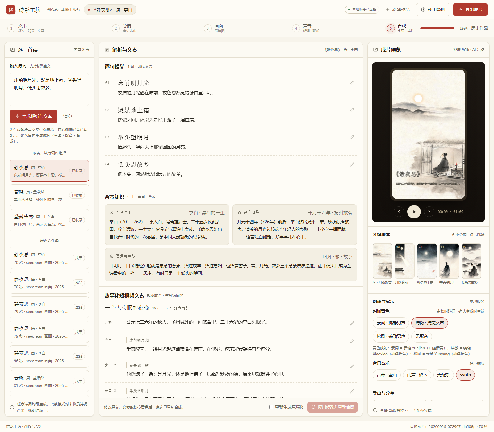

01 · 改了什么配音通道升级
从「机器音」换到神经语音，节奏重调
- 引擎切换 —— 默认配音从 Windows 系统语音（机械感明显）换成微软 Edge 神经语音：韵律自然、真人感强，尤其适合古诗朗诵；免费、免 Key，需要联网（本机已装好並测通）。
- 三档音色重新映射 —— 「云阙 / 清徵 / 松风」不再是同一把嗓子的变声近似，而是三把真正不同的神经音色，各自配音速参数（见下表）。
- 吟诵节奏调优 —— 诗句与旁白之间的停顿 380 → 450ms、镜尾留白 700 → 750ms：给朗诵留出「呼吸」，减少赶词感。
- 防呆回退 —— 未安装 edge-tts 或断网时，自动回退系统语音继续出片；离线环境也可在
.env 强制 SHIYING_VOICE_PROVIDER=sapi。
| 音色档案 | 神经音色 | 语速 | 定位 |
|---|
| 云阙 · 沉静男声 | 云健 Yunjian | −8% | 沉稳开阔，适合五言绝句的低回气质 |
| 清徵 · 清亮女声 | 晓晓 Xiaoxiao | −4% | 清亮温柔，适合春景与轻快题材 |
| 松风 · 苍劲男声 | 云扬 Yunyang | −12% | 浑厚苍劲，适合边塞与怀古诗 |
02 · 试听同一句「床前明月光，疑是地上霜。」
先听为快：三档新音色 + 新旧对照
云阙 · 云健yunque · zh-CN-YunjianNeural
清徵 · 晓晓qingzheng · zh-CN-XiaoxiaoNeural
松风 · 云扬songfeng · zh-CN-YunyangNeural
下面同句对照：同一档「云阙」，升级前后各一版 ——
升级前 · 系统语音sapi · Huihui（低音塑形近似）
升级后 · 神经语音edge · 云健 Yunjian
试听说明
样例为同一句古诗的直录（未经额外处理）；浏览器内置播放器可直接播放，也可到 docs/assets/voice-samples/ 用本地播放器对照。
03 · 验证实测记录
不是「听起来还行」，是逐项核过
- 三档互异 —— 同句合成时长 3312 / 3720 / 3240ms，三档文件两两不同；单段合成约 5–8 秒。
- 全片重渲染 —— 《静夜思》新版朗诵成片产出：70 秒、6 镜，视频流 H.264 + 音频流 44.1kHz 校验通过，配音段目录可见 edge 合成痕迹（.mp3 中间件 + 44.1k 成品）。
- 工作台映射透明 —— 页面「音色映射」直接展示「云阙 = 云健 Yunjian（神经语音）」等对应关系，接口数据同步核验。
- 缓存延续 —— 配音缓存按（音色 + 语速 + 文本）寻址：切档或改文案只重录受影响的段落，其余复用。

创作台 V2 的「音色映射」区：三档档案对应的实际神经音色与语速一目了然（2026-09-23 实机截图）。
04 · 使用怎么换、怎么稳
切换与边界
- 工作台里换音色 —— 点右栏音色 chip 后按「重新合成」：复用已出画面，只用新音色重录配音并重新合成（通常 1–3 分钟）。
- 需要联网 —— 神经语音走微软服务；断网或未装 edge-tts 时自动回退系统语音（仍可出片）。
- 产品化建议 —— 长期使用建议换官方云端语音（Azure / 火山引擎等，自备 Key）：接口形态相近，
openai 兼容通道已就位，替换成本低。